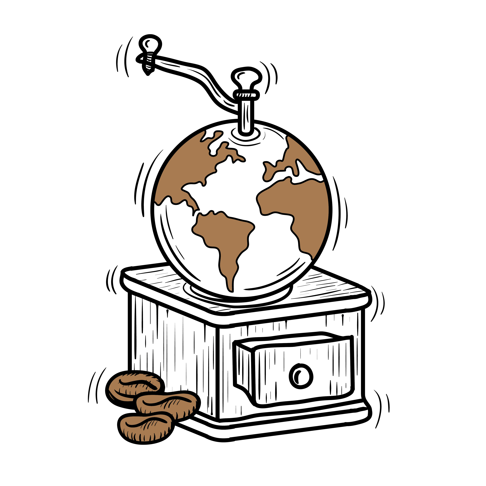
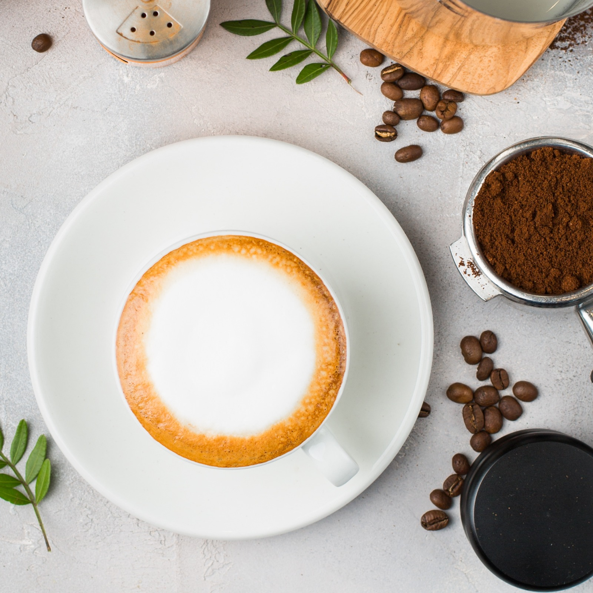

Cafeaua in jurul lumii
In acest articol descriem o parte din marii producatori globali ai cafelei. Afla mai multe informatii despre cafeaua care provine din Ethiopia, Kenya si India!
 Citeste articolul integralEchipamentele folosite pentru preparare
Te-ai intrebat pana acum cat de complicat este procesul de preparare al cafelei?In acest articol descriem pe scurt aparatura necesara prepararii unei cafele de calitate.
 Citeste articolul integral
Citeste articolul integral
Retete Originale
Fiecare persoana prefera cafeaua preparata intr-un mod diferit. In acest articol discutam retetele originale printre care si: Cappucino, Espresso si Flat White.
 Citeste articolul integral
Citeste articolul integral
Retete Noi
In articolul precedent am prezentat cateva retete originale. Ne propunem ca in acest articol sa prezentam retete noi, care desi au aparut mai recent au prins rapid popularitate.
 Citeste articolul integral
Citeste articolul integral
Q & A
Am preluat cele mai frecvente intrebari pe care le-am primit de la voi si am incercat sa oferim un raspuns pe scurt in acest articol.
 Citeste articolul integral